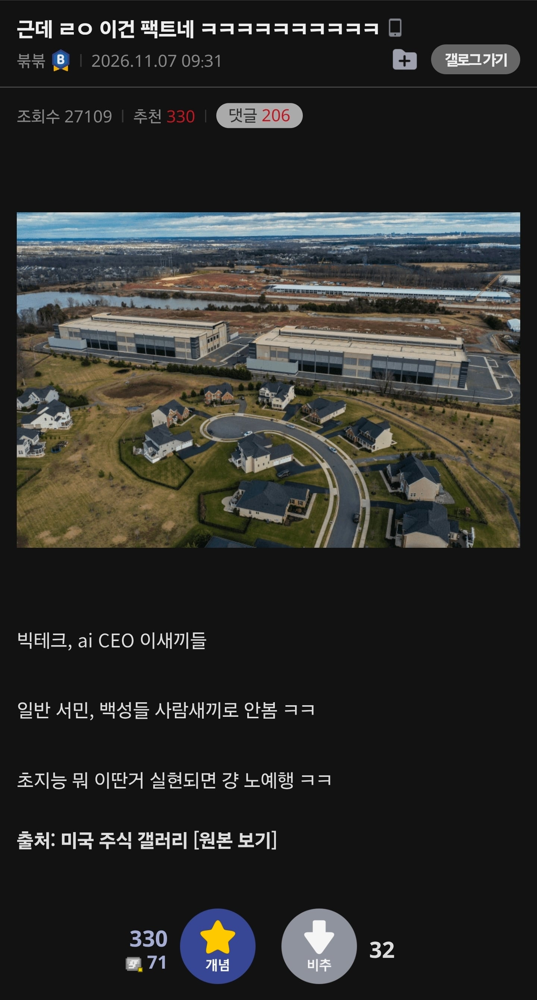

ㅋㅋㅋㅋㅋㅋ 말이 안 되는 소리지.
기본소득은 주는게 아니라 뜯는거지
아니면 민주주의를 부정하던가
지금당장 법인세올리거나 상속세 올리는것도 입에 거품물고 반대하는 서민새끼들이 잘도 투표하겠다 ㅋㅋㅋ
적당히 당근 주면서 제갈 물려놓고 본인 위치 공고히 하는건 지배계급이 태동하고서부터 늘 반복돼왔으니 망상이랄 것도 없음. 그거 준다고 걔들이 손해볼 것도 없고
"생산성 +999% 찍고 사펑 대기업되서 돈으로 정치까지 좌지우지하는 디스토피아로 새시대를 열것"
그런 말 하면 배급 포티햄들 화냄..!
사이버펑크가 온다!!
당연한거아니었노 ㅋㅋㅋㅋㅋ 걔네한테 우린 그냥 생체배터리지
별개로 저거 ai용 데센아니더라
ai생기는건 못 막고, 쟤네 배 가를 방법부터 고민해야 됨
미국은 옛날부터 저랬잖아.
초자본주의 국가고 로비가 합법인국가인데.
싸펑물 보면 답 나오자나. 괜히 그렇게 그려지는게 아니야.
피냐타... 답은 피냐타다
일론 새끼 저축이 필요없는 시대가 온다 입터는 거만 봐도 ㅋㅋㅋㅋㅋ 씨발놈이 그러면 지 계좌나 지금 다 털어버리지 뭔 개소리를
싸펑이 알고보니 다큐였네 ㄷㄷ
미국 사회 문화 분위기가 원래 저럼
합법인데 어쩌라고? 내돈 내가 쓴다는데 무슨 상관?
내 능력으로 하는건데 너도 능력 키워 그러면 해결 돼
이런 마인드 좀 있음
또 속에서 부글부글 끓어도
겉으로는 쿨한척 하고
암튼 한국사람이 보기에 정서가 좀 안맞는게 있지
근데 또 사회구조상 필연적이긴함
자본 경쟁사회라
애초에 탐욕스럽고 이기적이고 욕심많고 포부가 큰 사람이 더 위로 올라가다보니
아무래도 사회분위기가 그렇게 깔리지
이거랑은 조금 별개 이야기인데 ai시대에 살아남으려면 현장직가라는 얘기가 존나 웃김 ㅋㅋ 지금 ai 로봇 개발하는거 현장직 다 대체하려고 밤낮 없이 연구중인건 알고 하는 소린지 ㅋㅋ 현장은 체력,집중력,날씨,산재,고소,유해물질 이런 외부요인들이랑 노조 때문에 대체 1순위인데 ㅋㅋ
안 그런데가 없으니까 문제지..
그나마 AI 대체가 어려운게 현장직이라는건 잘 알잖아
생각보다 대체가 어려운게 아님
현장직이 오히려 로직 짜는건 훨씬 쉬움
공정 보전쪽이 가장 세팅하기 어렵고 골때리는 쪽일거고
품질검사부분에서는 스타트만 좀 골때리지 어바웃 잡아놓으면 그냥 슥슥슥 하고 검수할곳은 다 볼것이고
생산에선 단순노동일경우엔 진짜 가장 쉬울것이고 이걸 납품하는 부분이 아마도 가장 어려울텐데
이것도 공장 전체 자동화일경우에는 그냥 위치만 제대로 잡아주고 구역만 확실하게 정리되면 대체 안될수가 없음
내보내는게 어렵지 공장동 내부에서 세팅하는거는 자동화 충분히 가능하지
서류딸깍은 당연히 가장 쉬울것이고 현장에서 실체있는 봇이 움직일수 있다면 대체속도는 금방임
보통 현장직이라고 하면 공장보다는 공사현장을 의미하지 않나?
공사현장은 가성비가 아직 인간이 더 싸기 때문에 AI+로봇이 유의미한 가격대까지 내려가기 전까지는 휴먼을 쓰겠지.
ㄴㄴ 현장직은 공사현장이라고 안쓰지 거긴 그냥 노가다판이니까
현장직 중에 공사판이 들어가있는거지 넓은 의미로는 이미 완성된 공장동 내에서 사무직 외에
필수 현장인원들 이런 직종이 현장직이라 하지 공사현장은 현장이라고 보기 힘들지 거긴 애초에 시작점인데
얘 용어를 ㅂㅅ같이 쓰네, 공장은 현장직이 아니라 생산직이라고 일반적으로 한다, 현장직은 보통 출장현장, 공사판을 얘기하는거야
그럴거고 그럴거고 하는거보면 딱히;
ㅋㅋ 1순위는 그런 외부요인없이 로봇조차 필요없는 사무직이 1순위지. 훨씬 적은 금액으로 대체가능하고 유지보수마저 더 돈을 아낄 수 있는게 사무직인데 정 반대로 생각하네
뭐 조금이라도 오래일하려면 현장직가야하는건 맞잖어
밤낮없이 연구해서 서류딸깍 진단딸깍 일당 50짜리 고소득 전문직직종을 먼저 대체하려고 눈에 불을켤까 일당 20따리 노가다 잡부를 먼저 대체하려할까
그리고 ai기술상 컴퓨터 서류딸깍 난이도가
정밀로봇기술까지 뒷받침되어야하는 현장로봇보단 낮으니까
물론 니가 말하는것같은 현대차 삼전하닉같은 초고소득현장직은 어떻게든 로봇으로 바꾸려 하겠지..
현장 노동시장은 100년전부터 꾸준히 자동화를 시도하고있고
대체되지 않은 직군 최소인력만 남았으니 사무직보다는 타격이 덜하니까 그런거지 대체 안된다고 말하는 사람 아무도 없다
1년이라도 더 일하고싶으면 현장직가라는 소리가 그렇게 비웃을 소리는 아님 ㅋㅋㅋㅋ
노가다 현장직으로 오시죠 AI라면 직업윤리, 안전규정, 시방서 규정 등등 하면서 거절할 일 투성이임 ㅋㅋㅋㅋ
이런거 보면 존나 규제 하겠다고 말하는게 충분히 이해감 ㅋㅋ
이렇게 생각하는거면 노예되지말고 빨리 혀개물고 죽으면 되겠내
노예라도 되면 다행이지... 그냥 지네 영역 구축해놓고 나머지들은 굶어 뒤지라고 모든 인프라 끊고 버려버릴듯.
노동력도 기계가 하면 되는데 왜 생체기반 노예를 굴릴 필요가 있지? 환경오염이니 뭐니 시끄러운데 징기스칸 해버릴지도.
기본소득자체가 말이안됨
주택가 바로 옆에 짓는거 존나웃기네 ㅋㅋㅋ 저 주민들한테 전생에 멱이라도 따였나
기업들은 사람을 사람으로 취급안하는거 같음. 이놈(놈들)이 우리한테 이득인가 비용인가, 최대한 적은 비용으로 최대의 이윤을 내는 방법은 뭔가 이리 생각하다보녕 자연스럽게 저리 되는듯, 특히 규제가 부실할때
원래 사업하려면 좀 싸패 기질이 있어야 성공하는 듯
남이 피해를 봐서 내가 성공하먄 된다는 마인드가 일맥상통하는 면이 있지.
성공한 창업주 or CEO들은 싸패들이 많다고 하더라
이래서 내가 카르마를 안 믿어...ㅋㅋ ㅜ
ai정보얻으려고 특갤가서 많이 찾았는데
이새끼들 이거 비슷한소리 조금이라도 하면 바로 갱차당함 ㅅㅂ ㅋㅋㅋㅋ
'10년 내로 기업들이 나를 먹여 살려줘야 한다'
왜 기업이 니들같은 쌀숭이들 먹여살려야하냐고 하면 바로 31일갱차임 ㅋㅋㅋ
ai, 빅테크 빼도됨 기본적으로 ceo는 서민들 사람으로 안봄
기업이 선을 유지하는건 그냥 군대가없어서임
군대까지 있는 기업이 뭘하는지는 이미 역사가
알려줌 그냥 아라사카임
쁘띠 캉타오 아라사카 밀리테크 같은 것들이 사람 챙겨봤자 얼마나 챙긴다고 ㅋㅋ
대학가는건 고민좀 해봐야겟네
V, 내가 전쟁을 선포한 건 자본주의가 거슬려서도 아니고, 사라진 미국을 그리워해서도 아니야.
이건 우리 손을 벗어나 버린 시스템에 맞서 벌이는 사람들의 전쟁이야.
젠장, 엔트로피의 힘에 맞선 전쟁이라고. 알아들어?
저러는거 보면 소비해줄 사람들이 필요하니 기본소득 줄거라는 것도 순진한 망상이지